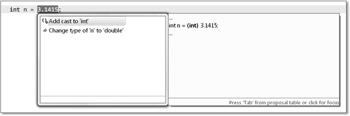

2.4 Ausdrücke, Operanden und Operatoren
Beginnen wir mit mathematischen Ausdrücken, um dann die Schreibweise in Java zu ermitteln. Eine mathematische Formel, etwa der Ausdruck –27 * 9, besteht aus Operanden (engl. operands) und Operatoren (engl. operators). Ein Operand ist eine Variable oder ein Literal. Im Fall einer Variablen wird der Wert aus der Variablen ausgelesen und mit ihm die Berechnung durchgeführt.
Die Arten von Operatoren
Operatoren verknüpfen die Operanden. Je nach Anzahl der Operanden unterscheiden wir:
- Ist ein Operator auf genau einem Operanden definiert, so nennt er sich unärer Operator (oder einstelliger Operator). Das Minus (negatives Vorzeichen) vor einem Operand ist ein unärer Operator, da er für genau den folgenden Operanden gilt.
- Die üblichen Operatoren Plus, Minus, Mal und Geteilt sind binäre (zweistellige) Operatoren.
- Es gibt auch einen Fragezeichen-Operator für bedingte Ausdrücke, der dreistellig ist.
Operatoren erlauben die Verbindung einzelner Ausdrücke zu neuen Ausdrücken. Einige Operatoren sind aus der Schule bekannt, wie Addition, Vergleich, Zuweisung und weitere. C(++)-Programmierer werden viele Freunde wiedererkennen.
2.4.1 Zuweisungsoperator
In Java dient das Gleichheitszeichen = der Zuweisung (engl. assignment).[67](Die Zuweisungen sehen zwar so aus wie mathematische Gleichungen, doch existiert ein wichtiger Unterschied: Die Formel a = a + 1 ist – zumindest im Dezimalsystem ohne zusätzliche Algebra – mathematisch nicht zu erfüllen, da es kein a geben kann, das a = a + 1 erfüllt. Aus Programmiersicht ist es in Ordnung, da die Variable a um eins erhöht wird.) Der Zuweisungsoperator ist ein binärer Operator, bei dem auf der linken Seite die zu belegende Variable steht und auf der rechten Seite ein Ausdruck.
| Beispiel |
|
Ein Ausdruck mit Zuweisungen: int i = 12, j; |
|
Die Multiplikation berechnet das Produkt von 12 und 2 und speichert das Ergebnis in j ab. Von allen primitiven Variablen, die in dem Ausdruck vorkommen, wird also der Wert ausgelesen und in den Ausdruck eingesetzt.[68](Es gibt Programmiersprachen, in denen Wertoperationen besonders gekennzeichnet werden. So etwa in LOGO. Eine Wertoperation schreibt sich dort mit einem Doppelpunkt vor der Variablen, etwa :X + :Y.) Dies nennt sich auch Wertoperation, da der Wert der Variablen betrachtet wird und nicht ihr Speicherort oder gar ihr Variablenname. |
Erst nach dem Auswerten des Ausdrucks kopiert der Zuweisungsoperator das Ergebnis in die Variable. Gibt es Laufzeitfehler, etwa durch eine Division durch null, gibt es keinen Schreibzugriff auf die Variable.
Zuweisungen sind auch Ausdrücke
Zwar finden sich Zuweisungen oft als Ausdrucksanweisung wieder, doch können sie an jeder Stelle stehen, an der ein Ausdruck erlaubt ist, etwa in einem Methodenaufruf wie print():
int a = 1; // Deklaration mit Initialisierung
a = 2; // Anweisung mit Zuweisung
System.out.println( a = 3 ); // Ausdruck mit Zuweisung. Liefert 3.
| Sprachenvergleich |
|
Das einfache Gleichheitszeichen = dient in Java nur der Zuweisung. In anderen Programmiersprachen wird die Zuweisung durch ein anderes Symbol deutlich gemacht, etwa wie in Pascal mit :=. Um Zuweisungen von Vergleichen trennen zu können, definiert Java hier der C(++)-Tradition folgend einen binären Vergleichsoperator ==. Der Vergleichsoperator liefert immer den Ergebnistyp boolean: int baba = 1; |
Mehrere Zuweisungen in einem Schritt
Zuweisungen der Form a = b = c = 0; sind erlaubt und gleichbedeutend mit den drei Anweisungen c = 0; b = c; a = b;. Die explizite Klammerung a = (b = (c = 0)) macht noch einmal deutlich, dass sich Zuweisungen verschachteln lassen und Zuweisungen wie c = 0 Ausdrücke sind, die einen Wert liefern. Doch auch dann, wenn wir meinen, dass
a = (b = c + d) + e;
eine coole Vereinfachung im Vergleich zu
b = c + d;
a = b + e;
ist, sollten wir mit einer Zuweisung pro Zeile auskommen.
Die Reihenfolge der Auswertung zeigt anschaulich folgendes Beispiel:
int b = 10;
System.out.println( (b = 20) * b ); // 400
System.out.println( b ); // 20
2.4.2 Arithmetische Operatoren
Ein arithmetischer Operator verknüpft die Operanden mit den Operatoren Addition (+), Subtraktion (–), Multiplikation (*) und Division (/). Zusätzlich gibt es den Restwert-Operator (%), der den bei der Division verbleibenden Rest betrachtet. Alle Operatoren sind für ganzzahlige Werte sowie für Fließkommazahlen definiert. Die arithmetischen Operatoren sind binär, und auf der linken und rechten Seite sind die Typen numerisch. Der Ergebnistyp ist ebenfalls numerisch.
Numerische Umwandlung
Bei Ausdrücken mit unterschiedlichen numerischen Datentypen, etwa int und double, bringt der Compiler vor der Anwendung der Operation alle Operanden auf den umfassenderen Typ. Vor der Auswertung von 1 + 2.0 wird somit die Ganzzahl 1 in ein double konvertiert und dann die Addition vorgenommen – das Ergebnis ist auch vom Typ double. Das nennt sich numerische Umwandlung (engl. numeric promotion). Bei byte und short gilt die Sonderregelung, dass sie vorher in int konvertiert werden.[69](http://java.sun.com/docs/books/jls/third_edition/html/conversions.html#26917) (Auch im Java-Bytecode gibt es keine arithmetischen Operationen auf byte, short und char.) Anschließend wird die Operation ausgeführt, und der Ergebnistyp entspricht dem umfassenderen Typ.
Der Divisionsoperator
Der binäre Operator »/« bildet den Quotienten aus Dividend und Divisor. Auf der linken Seite steht der Dividend und auf der rechten der Divisor. Die Division ist für Ganzzahlen und für Fließkommazahlen definiert. Bei der Ganzzahldivision wird zu null hin gerundet, und das Ergebnis ist keine Fließkommazahl, sodass 1/3 das Ergebnis 0 ergibt und nicht 0,333... Den Datentyp des Ergebnisses bestimmen die Operanden und nicht der Operator. Soll das Ergebnis vom Typ double sein, muss ein Operand ebenfalls double sein.
System.out.println( 1.0 / 3 ); // 0.3333333333333333
System.out.println( 1 / 3.0 ); // 0.3333333333333333
System.out.println( 1 / 3 ); // 0
Strafe bei Division durch null
Schon die Schulmathematik lehrte uns, dass die Division durch null nicht erlaubt ist. Führen wir in Java eine Ganzzahldivision mit dem Divisor 0 durch, so bestraft uns Java mit einer ArithmeticException, die, wenn sie nicht behandelt würde, zum Ende des Programmablaufs führt. Bei Fließkommazahlen liefert eine Division durch 0 keine Ausnahme, sondern +/– unendlich und bei 0.0/0.0 den Sonderwert NaN (mehr dazu folgt in Kapitel 18, »Bits und Bytes und Mathematisches«). Ein NaN steht für Not a Number (auch schon manchmal »Unzahl« genannt) und wird vom Prozessor erzeugt, falls er eine mathematische Operation wie die Division durch null nicht durchführen kann. In Kapitel 12 werden wir auf NaN noch einmal zurückkommen.
| Anekdote |
|
Auf dem Lenkraketenkreuzer USS Yorktown gab ein Mannschaftsmitglied aus Versehen die Zahl Null ein. Das führte zu einer Division durch null, und der Fehler pflanzte sich so weit fort, dass die Software abstürzte und das Antriebssystem stoppte. Das Schiff trieb mehrere Stunden antriebslos im Wasser. |
Der Restwert-Operator % *
Eine Ganzzahldivision muss nicht unbedingt glatt aufgehen, wie im Fall von 9/2. In diesem Fall gibt es den Rest 1. Diesen Rest liefert der Restwert-Operator (engl. remainder operator), oft auch Modulo genannt. Mathematiker unterscheiden die beiden Begriffe Rest und Modulo, da ein Modulo nicht negativ ist, der Rest in Java aber schon. Das soll uns aber egal sein.
System.out.println( 9 % 2 ); // 1
Der Restwert-Operator ist auch auf Fließkommazahlen anwendbar, und die Operanden können negativ sein.
System.out.println( 12.0 % 2.5 ); // 2.0
Die Division und der Restwert richten sich in Java nach einer einfachen Formel:
(int)(a/b) · b + (a%b) = a
| Beispiel |
|
Die Gleichung ist erfüllt, wenn wir etwa a = 10 und b = 3 wählen. Es gilt: (int)(10/3) = 3 und 10 % 3 ergibt 1. Dann ergeben 3 * 3 + 1 = 10. |
Aus dieser Gleichung folgt, dass beim Restwert das Ergebnis nur dann negativ ist, wenn der Dividend negativ ist; er ist nur dann positiv, wenn der Dividend positiv ist. Es ist leicht einzusehen, dass das Ergebnis der Restwert-Operation immer echt kleiner ist als der Wert des Divisors. Wir haben den gleichen Fall wie bei der Ganzzahldivision, dass ein Divisor mit dem Wert 0 eine ArithmeticException auslöst und bei Fließkommazahlen zum Ergebnis NaN führt.
Listing 2.10: RemainderAndDivDemo.java, main()
System.out.println( "+5% +3 = " + (+5% +3) ); // 2
System.out.println( "+5 / +3 = " + (+5 / +3) ); // 1
System.out.println( "+5% –3 = " + (+5% –3) ); // 2
System.out.println( "+5 / –3 = " + (+5 / –3) ); // –1
System.out.println( "-5% +3 = " + (-5% +3) ); // –2
System.out.println( "-5 / +3 = " + (-5 / +3) ); // –1
System.out.println( "-5% –3 = " + (-5% –3) ); // –2
System.out.println( "-5 / –3 = " + (-5 / –3) ); // 1
Gewöhnungsbedürftig ist die Tatsache, dass der erste Operand (Dividend) das Vorzeichen des Restes definiert und niemals der zweite (Divisor).
| Hinweis |
|
Um mit value % 2 == 1 zu testen, ob value eine ungerade Zahl ist, muss value positiv sein, denn –3 % 2 wertet Java zu –1 aus. Der Test auf ungerade Zahlen wird erst wieder korrekt mit value % 2 != 0. |
Restwert für Fließkommazahlen und Math.IEEEremainder( ) *
Über die oben genannte Formel können wir auch bei Fließkommazahlen das Ergebnis einer Restwert-Operation leicht berechnen. Dabei muss beachtet werden, dass sich der Operator nicht so wie unter IEEE 754 verhält. Denn diese Norm schreibt vor, dass die Restwert-Operation den Rest von einer rundenden Division berechnet und nicht von einer abschneidenden. So wäre das Verhalten nicht analog zum Restwert bei Ganzzahlen. Java definiert den Restwert jedoch bei Fließkommazahlen genauso wie den Restwert bei Ganzzahlen. Wünschen wir ein Restwert-Verhalten, wie IEEE 754 es vorschreibt, so können wir immer noch die statische Bibliotheksmethode Math.IEEEremainder()[70](Es gibt auch Methoden, die nicht mit Kleinbuchstaben beginnen, wobei das sehr selten ist und nur in Sonderfällen auftritt. ieeeRemainder() sah für die Autoren nicht nett aus.) verwenden.
Auch bei der Restwert-Operation bei Fließkommazahlen werden wir niemals eine Exception erwarten. Eventuelle Fehler werden, wie im IEEE-Standard beschrieben, mit NaN angegeben. Ein Überlauf oder Unterlauf kann zwar vorkommen, aber nicht geprüft werden.
Rundungsfehler *
Prinzipiell sollten Anweisungen wie 1.1 – 0.1 immer 1.0 ergeben, jedoch treten interne Rundungsfehler bei der Darstellung auf und lassen das Ergebnis von Berechnung zu Berechnung immer ungenauer werden. Ein besonders ungünstiger Fehler trat 1994 beim Pentium-Prozessor im Divisionsalgorithmus Radix-4 SRT auf, ohne dass der Programmierer der Schuldige war:
double x, y, z;
x = 4195835.0;
y = 3145727.0;
z = x – (x/y) * y;
System.out.println( z );
Ein fehlerhafter Prozessor liefert hier 256, obwohl laut Rechenregel das Ergebnis 0 sein muss. Laut Intel sollte für einen normalen Benutzer (Spieler, Softwareentwickler, Surfer?) der Fehler nur alle 27.000 Jahre auftauchen. Glück für die meisten. Eine Studie von IBM errechnete eine Fehlerhäufigkeit von einmal in 24 Tagen. Alles in allem hat Intel die CPUs zurückgenommen, über 400 Millionen US-Dollar verloren und spät den Kopf gerade noch aus der Schlinge gezogen.
Die meisten Rundungsfehler resultieren aber daher, dass endliche Dezimalbrüche im Rechner als Näherungswerte für periodische Binärbrüche repräsentiert werden müssen. 0.1 entspricht einer periodischen Mantisse im IEEE-Format.
2.4.3 Unäres Minus und Plus
Die binären Operatoren sitzen zwischen zwei Operanden, während sich ein unärer Operator genau einen Operanden vornimmt. Das unäre Minus (Operator zur Vorzeichenumkehr) etwa dreht das Vorzeichen des Operanden um. So wird aus einem positiven Wert ein negativer und aus einem negativen Wert ein positiver.
| Beispiel |
|
Drehe das Vorzeichen einer Zahl um: a = -a; a = –1 * a; |
Das unäre Plus ist eigentlich unnötig; die Entwickler haben es jedoch aus Symmetriegründen mit eingeführt.
| Beispiel |
|
Minus und Plus sitzen direkt vor dem Operanden, und der Compiler weiß selbstständig, ob dies unär oder binär ist. Der Compiler erkennt auch folgende Konstruktion: int i = – – – 2 + – + 3; |
2.4.4 Zuweisung mit Operation
In Java lassen sich Zuweisungen mit numerischen Operatoren kombinieren. Für einen binären Operator (symbolisch # genannt) im Ausdruck a = a # (b) kürzt der Verbundoperator den Ausdruck zu a #= b ab. Dazu einige Beispiele:
| Schreibweise mit Verbundoperator | Ausführliche Schreibweise |
| a += 2; | a = a + 2; |
| a *= –1; | a = a * –1; |
| a /= 10; | a = a / 10; |
Dass eine Zuweisung immer auch ein Ausdruck ist, zeigt folgendes Beispiel:
int a = 0;
System.out.println( a ); // 0
System.out.println( a += 2 ); // 2
System.out.println( a ); // 2
Besondere Obacht sollten wir auf die automatische Klammerung geben. Bei einem Ausdruck wie a *= 3 + 5 gilt a = a * (3 + 5) und nicht selbstverständlich die Punkt-vor-Strich-Regelung a = a * 3 + 5.
Falls es sich bei der rechten Seite um einen komplexeren Ausdruck handelt, wird dieser nur einmal ausgewertet. Dies ist wichtig bei Methodenaufrufen, die Nebenwirkungen besitzen, also etwa Zustände wie einen Zähler verändern.
| Beispiel |
|
Wir profitieren auch bei Feldzugriffen (siehe Abschnitt 3.8, »Arrays«) von Verbundoperationen, da die Auswertung des Index nur einmal stattfindet: array[ 2 * i + j ] = array[ 2 * i + j ] + 1; array[ 2 * i + j ] += 1; |
2.4.5 Präfix- oder Postfix-Inkrement und -Dekrement
Das Herauf- und Heruntersetzen von Variablen ist eine sehr häufige Operation, wofür die Entwickler in der Vorgängersprache C auch einen Operator spendiert hatten. Die praktischen Operatoren ++ und -- kürzen die Programmzeilen zum Inkrement und Dekrement ab:
i++; // Abkürzung für i = i + 1
j--; // j = j – 1
Eine lokale Variable muss allerdings vorher initialisiert sein, da ein Lesezugriff vor einem Schreibzugriff stattfindet. Der ++/––-Operator erfüllt also zwei Aufgaben: Neben der Wertrückgabe gibt es eine Veränderung der Variablen.
Vorher oder nachher?
Die beiden Operatoren liefern einen Ausdruck und geben daher einen Wert zurück. Es macht jedoch einen feinen Unterschied, wo dieser Operator platziert wird. Es gibt ihn nämlich in zwei Varianten: Er kann vor der Variablen stehen, wie in ++i (Präfix-Schreibweise), oder dahinter, wie bei i++ (Postfix-Schreibweise). Der Präfix-Operator verändert die Variable vor der Auswertung des Ausdrucks, und der Postfix-Operator ändert sie nach der Auswertung des Ausdrucks. Mit anderen Worten: Nutzen wir einen Präfix-Operator, so wird die Variable erst herauf- beziehungsweise heruntergesetzt und dann der Wert geliefert.
| Beispiel | |
|
Präfix/Postfix in einer Ausgabeanweisung: Präfix-Inkrement und -Dekrement int i = 10, j = 20; |
|
|
Postfix-Inkrement und -Dekrement int i = 10, j = 20; |
|
Mit der Möglichkeit, Variablen zu erhöhen und zu vermindern, ergeben sich vier Varianten:
| Präfix | Postfix | |
| Inkrement | Prä-Inkrement, ++i | Post-Inkrement, i++ |
| Dekrement | Prä-Dekrement, --i | Post-Dekrement, i-- |
| Hinweis |
|
In Java sind Inkrement (++) und Dekrement (--) für alle numerischen Datentypen erlaubt, also auch für Fließkommazahlen: double d = 12; |
Einige Kuriositäten *
Wir wollen uns abschließend noch mit einer Besonderheit des Post-Inkrements und Prä-Inkrements beschäftigen, die nicht nachahmenswert ist:
a = 2;
a = ++a; // a = 3
b = 2;
b = b++; // b = 2
Im ersten Fall bekommen wir den Wert 3 und im zweiten Fall den Wert 2. Der erste Fall überrascht nicht, denn a = ++a erhöht den Wert 2 um 1, und anschließend wird 3 der Variablen a zugewiesen. Bei b ist es raffinierter: Der Wert von b ist 2, und dieser Wert wird intern vermerkt. Anschließend erhöht b++ die Variable b. Doch die Zuweisung setzt b auf den gemerkten Wert, der 2 war. Also ist b = 2.
| Hinweis |
|
Das Post-Inkrement finden wir auch im Namen der Programmiersprache C++. Es soll ausdrücken, dass es »C-mit-eins-drauf« ist, also ein verbessertes C. Mit dem Wissen über den Postfix-Operator ist klar, dass diese Erhöhung aber erst nach der Nutzung auftritt – also ist C++ auch nur C, und der Vorteil kommt später. Einer der Entwickler von Java, Bill Joy, hat einmal Java als C++-- beschrieben. Er meinte damit C++ ohne die schwer zu pflegenden Eigenschaften. |
2.4.6 Die relationalen Operatoren und die Gleichheitsoperatoren
Relationale Operatoren sind Vergleichsoperatoren, die Ausdrücke miteinander vergleichen und einen Wahrheitswert vom Typ boolean ergeben. Die von Java für numerische Vergleiche zur Verfügung gestellten Operatoren sind:
- Größer (>)
- Kleiner (<)
- Größer-gleich (>=)
- Kleiner-gleich (<=)
Weiterhin gibt es einen Spezial-Operator instanceof zum Testen von Referenzeigenschaften.
Zudem kommen zwei Vergleichsoperatoren hinzu, die Java als Gleichheitsoperatoren bezeichnet:
- Test auf Gleichheit (==)
- Test auf Ungleichheit (!=)
Dass Java hier einen Unterschied zwischen Gleichheitsoperatoren und Vergleichsoperatoren macht, liegt an einem etwas anderen Vorrang, der uns aber nicht weiter beschäftigen soll.
Ebenso wie arithmetische Operatoren passen die relationalen Operatoren ihre Operanden an einen gemeinsamen Typ an. Handelt es sich bei den Typen um Referenztypen, so sind nur die Vergleichsoperatoren == und != erlaubt.
Kaum Verwechslungsprobleme durch == und =
Die Verwendung des relationalen Operators == und der Zuweisung = führt bei Einsteigern oft zu Problemen, da die Mathematik für Vergleiche und Zuweisungen immer nur ein Gleichheitszeichen kennt. Glücklicherweise ist das Problem in Java nicht so drastisch wie beispielsweise in C(++), da die Typen der Operatoren unterschiedlich sind. Der Vergleichsoperator ergibt immer nur den Rückgabewert boolean. Zuweisungen von numerischen Typen ergeben jedoch wieder einen numerischen Typ. Es kann also kein Problem wie das folgende geben:
int a = 10, b = 11;
boolean result1 = ( a = b ); //Compilerfehler
boolean result2 = ( a == b );
| Beispiel |
|
Die Wahrheitsvariable hasSign soll dann true sein, wenn das Zeichen sign gleich dem Minus ist: boolean hasSign = (sign == '-'); |
| (Anti-)Stil |
|
Bei einem Vergleich mit == können beide Operanden vertauscht werden – wenn die beiden Seiten keine beeinflussenden Seiteneffekte produzieren, also etwa Zustände ändern. Am Ergebnis ändert sich nichts, denn der Vergleichsoperator ist kommutativ. So sind if ( worldExpoShanghaiCostInUSD == 58000000000L ) if ( 58000000000L == worldExpoShanghaiCostInUSD ) |
|
semantisch gleich. Bei einem Gleichheitsvergleich zwischen Variable und Literal werden viele Entwickler mit einer Vergangenheit in der Programmiersprache C die Konstanten links und die Variable rechts setzen. Der Grund für diesen sogenannten Yoda-Stil[71](Yoda ist eine Figur aus Star Wars, die eine für uns ungewöhnliche Satzstellung nutzt. Anstatt Sätze mit Subjekt + Prädikat + Objekt (SPO) aufzubauen, nutzt Yoda die Form Objekt + Subjekt + Prädikat (OSP), etwa bei »Begun the Clone War has«. Objekt und Subjekt sind umgedreht, so wie die Operanden aus dem Beispiel auch, sodass dieser Ausdruck sich so lesen würde: »Wenn 58000000000 gleich worldExpoShanghaiCostInUSD ist« statt der üblichen SPO-Lesung »wenn worldExpoShanghaiCostInUSD ist gleich 58000000000«. Im Arabischen ist diese OSP-Stellung üblich, sodass Entwickler aus dem arabischen Sprachraum diese Form eigentlich natürlich finden könnten. Wenn das mal nicht eine Studie wert ist …) ist die Vermeidung von Fehlern. Fehlt in C ein Gleichheitszeichen, so ist if(worldExpoShanghaiCostInUSD = 58000000000L) als Zuweisung compilierbar (wenn auch mittlerweile mit einer Warnung), if(58000000000L = worldExpoShanghaiCostInUSD) aber nicht. Die erste fehlerhafte Version initialisiert eine Variable und springt immer in die if-Anweisung, da in C jeder Ausdruck (hier von der Zuweisung, die ja ein Ausdruck ist) ungleich 0 als wahr interpretiert wird. Das ist ein logischer Fehler, den die zweite Schreibweise verhindert, denn sie führt zu einem Compilerfehler. In Java ist dieser Fehlertyp nicht zu finden – es sei denn, der Variablentyp ist boolean, was sehr selten vorkommt –, und so sollte diese Yoda-Schreibweise vermieden werden. |
2.4.7 Logische Operatoren: Nicht, Und, Oder, Xor
Die Abarbeitung von Programmcode ist oft an Bedingungen geknüpft. Diese Bedingungen sind oftmals komplex zusammengesetzt, wobei drei Operatoren am häufigsten vorkommen:
- Nicht (Negation): Dreht die Aussage um: Aus wahr wird falsch, und aus falsch wird wahr.
- Und (Konjunktion): Beide Aussagen müssen wahr sein, damit die Gesamtaussage wahr wird.
- Oder (Disjunktion): Eine der beiden Aussagen muss wahr sein, damit die Gesamtaussage wahr wird.
Mit logischen Operatoren werden Wahrheitswerte nach definierten Mustern verknüpft. Logische Operatoren operieren nur auf boolean-Typen, andere Typen führen zu Compilerfehlern. Java bietet die Operatoren Nicht (!), Und (&&), Oder (||) und Xor (^) an. Xor ist eine Operation, die genau dann wahr liefert, wenn genau einer der beiden Operanden wahr ist. Sind beide Operanden gleich (also entweder true oder false), so ist das Ergebnis false. Xor heißt auch exklusives beziehungsweise ausschließendes Oder. Im Deutschen trifft die Formulierung »entweder ... oder« diesen Sachverhalt gut: Entweder ist es das eine oder das andere, aber nicht beides zusammen. Beispiel: »Willst du entweder ins Kino oder DVD schauen?«
| boolean a | boolean b | ! a | a && b | a || b | a ^ b |
| true | true | false | true | true | false |
| true | false | false | false | true | true |
| false | true | true | false | true | true |
| false | false | true | false | False | false |
Die logischen Operatoren arbeiten immer auf dem Typ boolean. In Abschnitt 18.1.1, »Die Bit-Operatoren Komplement, Und, Oder und Xor«, werden wir sehen, dass sich die gleichen Verknüpfungen auf jedem Bit einer Ganzzahl durchführen lassen.
2.4.8 Kurzschluss-Operatoren
Eine Besonderheit sind die beiden Operatoren && (Und) beziehungsweise || (Oder). In der Regel muss ein logischer Ausdruck nur dann weiter ausgewertet werden, wenn er das Endergebnis noch beeinflussen kann. Zwei Operatoren bieten sich zur Optimierung der Ausdrücke an:
- Und: Ist einer der beiden Ausdrücke falsch, so kann der Ausdruck schon nicht mehr wahr werden. Das Ergebnis ist falsch.
- Oder: Ist mindestens einer der Ausdrücke schon wahr, so ist auch der gesamte Ausdruck wahr.
Der Compiler bzw. die Laufzeitumgebung kann den Programmfluss abkürzen. Daher nennen sich die beiden Operatoren auch Kurzschluss-Operatoren (engl. short-circuit operators).[72](Den Begriff verwendet die Java-Sprachdefinition nicht! Siehe dazu auch http://java.sun.com/docs/ books/jls/third_edition/html/expressions.html#15.23.) Kürzt der Compiler ab, wertet er nur den ersten Ausdruck aus und den zweiten dann nicht mehr.
Nicht-Kurzschluss-Operatoren *
In einigen Fällen ist es erwünscht, dass die Laufzeitumgebung alle Teilausdrücke auswertet. Das kann der Fall sein, wenn Methoden Nebenwirkungen haben sollen, etwa Zustände ändern. Daher bietet Java zusätzlich die nicht über einen Kurzschluss arbeitenden Operatoren | und & an, die eine Auswertung aller Teilausdrücke erzwingen.
| Beispiel |
|
In der ersten und dritten Anweisung wird die Methode boolean f() nicht aufgerufen, in der zweiten und vierten schon. System.out.println( true || f() ); // true, f() wird nicht aufgerufen |
Für Xor kann es keinen Kurzschluss-Operator geben, da immer beide Operanden ausgewertet werden müssen, bevor das Ergebnis feststeht.
2.4.9 Der Rang der Operatoren in der Auswertungsreihenfolge
Aus der Schule ist der Spruch »Punktrechnung geht vor Strichrechnung« bekannt, sodass sich der Ausdruck 1 + 2 * 3 zu 7 und nicht zu 9 auswertet.[73](Dass von diesen Rechnungen eine gewisse Spannung ausgeht, zeigen diverse Fernsehkanäle, die damit ihr Abendprogramm füllen.)
| Beispiel |
|
Auch wenn bei Ausdrücken wie a() + b() * c() zuerst das Produkt gebildet wird, schreibt doch die Auswertungsreihenfolge von binären Operatoren vor, dass der linke Operand zuerst ausgewertet werden muss, was bedeutet, dass Java zuerst die Methode a() aufruft. |
In den meisten Programmiersprachen gibt es eine Unzahl von Operatoren neben Plus und Mal, die alle ihre eigenen Vorrangregeln besitzen.[74](Es gibt Programmiersprachen wie APL, die keine Vorrangregeln kennen. Sie werten die Ausdrücke streng von rechts nach links oder umgekehrt aus.) Der Multiplikationsoperator besitzt zum Beispiel eine höhere Priorität und damit eine andere Auswertungsreihenfolge als der Plus-Operator. Die Rangordnung der Operatoren (engl. operator precedence) legt folgende Tabelle fest, wobei der arithmetische Typ für Ganz- und Fließkommazahlen steht und der integrale Typ für char und Ganzzahlen:
Die Rechenregel für »Mal vor Plus« kann sich jeder noch leicht merken. Auch ist leicht zu merken, dass die typischen arithmetischen Operatoren wie Plus und Mal eine höhere Priorität als Vergleichsoperationen haben. Komplizierter ist die Auswertung bei den zahlreichen Operatoren, die seltener im Programm vorkommen.
| Beispiel |
|
Wie ist die Auswertung bei dem nächsten Ausdruck? boolean A = false, |
Vermutlich gibt es Programmierer, die dies wissen oder eine Tabelle mit Rangordnungen am Monitor kleben haben. Aber beim Durchlesen von fremdem Code ist es nicht schön, immer wieder die Tabelle konsultieren zu müssen, die verrät, ob nun das binäre Xor oder das binäre Und stärker bindet.
| Tipp |
|
Alle Ausdrücke, die über die einfache Regel »Punktrechnung geht vor Strichrechnung« hinausgehen, sollten geklammert werden. Da die unären Operatoren ebenfalls sehr stark binden, kann eine Klammerung wegfallen. |
Links- und Rechtsassoziativität *
Bei den Operatoren + und * gilt die mathematische Kommutativität und Assoziativität. Das heißt, die Operanden können prinzipiell umgestellt werden, und das Ergebnis sollte davon nicht beeinträchtigt sein. Bei der Division unterscheiden wir zusätzlich Links- und Rechtsassoziativität. Deutlich wird das am Beispiel A / B / C. Den Ausdruck wertet Java von links nach rechts aus, und zwar als (A / B) / C; daher ist der Divisionsoperator linksassoziativ. Hier sind Klammern angemessen. Denn würde der Compiler den Ausdruck zu A / (B / C) auswerten, käme dies einem A * C / B gleich. In Java sind die meisten Operatoren linksassoziativ, aber es gibt Ausnahmen, wie Zuweisungen der Art A = B = C, die der Compiler zu A = (B = C) auswertet.
| Hinweis |
|
Die mathematische Assoziativität ist natürlich gefährdet, wenn durch Überläufe Rechenfehler mit im Spiel sind: float a = –16777217F; |
2.4.10 Die Typanpassung (das Casting)
Zwar ist Java eine getypte Sprache, aber sie ist nicht so stark getypt, dass es hinderlich ist. So übersetzt der Compiler die folgenden Zeilen problemlos:
int anInt = 1;
long long1 = 1;
long long2 = anInt;
Streng genommen könnte ein Compiler bei einer sehr starken Typisierung die letzten beiden Zeilen ablehnen, denn das Literal 1 ist vom Typ int und kein 1L, also long, und in long2 = anInt ist die Variable anInt vom Typ int statt vom gewünschten Datentyp long.
Arten der Typanpassung
In der Praxis kommt es also vor, dass Datentypen konvertiert werden müssen. Dies nennt sich Typanpassung (engl. typecast, kurz cast). Java unterscheidet zwei Arten der Typanpassung:
- Automatische (implizite) Typanpassung: Daten eines kleineren Datentyps werden automatisch (implizit) dem größeren angepasst. Der Compiler nimmt diese Anpassung selbstständig vor. Daher funktioniert unser erstes Beispiel mit etwa long2 = anInt.
- Explizite Typanpassung: Ein größerer Typ kann einem kleineren Typ mit möglichem Verlust von Informationen zugewiesen werden.
Typanpassungen gibt es bei primitiven Datentypen und bei Referenztypen. Während die folgenden Absätze die Anpassungen bei einfachen Datentypen beschreiben, kümmert sich Kapitel 5, »Eigene Klassen schreiben«, um die Typkompatibilität bei Referenzen.
Automatische Anpassung der Größe
Werte der Datentypen byte und short werden bei Rechenoperationen automatisch in den Datentyp int umgewandelt. Ist ein Operand vom Datentyp long, dann werden alle Operanden auf long erweitert. Wird aber short oder byte als Ergebnis verlangt, dann ist dieses durch einen expliziten Typecast anzugeben, und nur die niederwertigen Bits des Ergebniswerts werden übergeben. Folgende Typumwandlungen führt Java automatisch aus:
| Vom Typ | In den Typ |
| byte | short, int, long, float, double |
| short | int, long, float, double |
| char | int, long, float, double |
| int | long, float, double |
| long | float, double |
| float | double |
Die Anpassung wird im Englischen widening conversion genannt, weil sie den Wertebereich automatisch erweitert.
| Hinweis |
|
Obwohl von der Datentypgröße her ein char (16 Bit) zwischen byte (8 Bit) und int (32 Bit) liegt, taucht der Typ in einer rechten Spalte der oberen Tabelle nicht auf, da char kein Vorzeichen speichern kann, während die anderen Datentypen byte, short, int, long, float, double alle ein Vorzeichen besitzen. Daher kann so etwas wie das Folgende nicht funktionieren: byte b = 'b'; |
Explizite Typanpassung
Die explizite Anpassung engt einen Typ ein, sodass diese Operation im Englischen narrowing conversion genannt wird. Der gewünschte Typ für eine Typanpassung wird vor den umzuwandelnden Datentyp in Klammern gesetzt.
| Beispiel |
|
Umwandlung einer Fließkommazahl in eine Ganzzahl: int n = (int) 3.1415; // n = 3 |


Abbildung 2.5: Passt der Typ eines Ausdrucks nicht, lässt er sich mit  +
+  korrigieren.
korrigieren.
Eine Typumwandlung hat eine sehr hohe Priorität. Daher muss der Ausdruck gegebenenfalls geklammert werden.
| Beispiel |
|
Die Zuweisung an n verfehlt das Ziel: int n = (int) 1.0315 + 2.1; |
Typumwandlung von Fließkommazahlen in Ganzzahlen
Bei der expliziten Typumwandlung von double und float in einen Ganzzahltyp kann es selbstverständlich zum Verlust von Genauigkeit kommen sowie zur Einschränkung des Wertebereichs. Bei der Konvertierung von Fließkommazahlen verwendet Java eine Rundung gegen null.
| Beispiel |
|
Explizite Typanpassung einer Fließkommazahl an ein int. System.out.println( (int) +12.34 ); // 12 |
Automatische Typanpassung bei Berechnungen mit byte und short auf int *
Eine Operation vom Typ int mit int liefert den Ergebnistyp int, und long mit long liefert ein long.
Listing 2.11: AutoConvert.java, main()
int i1 = 1, i2 = 2;
int i3 = i1 + i2;
long l1 = 1, l2 = 2;
long l3 = l1 + l2;
Diese Zeilen übersetzt der Compiler wie erwartet. Und so erscheint es logisch, dass das Gleiche auch für die Datentypen short und byte gilt.
short s1 = 1, s2 = 2;
byte b1 = 1, b2 = 2;
// short s3 = s1 + s2; //
// byte b3 = b1 + b2; //
Die auskommentierten Zeilen machen schon deutlich: Es ist nicht möglich, ohne explizite Typumwandlung zwei short- oder byte-Zahlen zu addieren. Richtig ist:
short s3 = (short)(s1 + s2);
byte b3 = (byte)(b1 + b2);
Der Grund liegt beim Java-Compiler. Wenn Ganzzahl-Ausdrücke vom Typ kleiner int mit einem Operator verbunden werden, passt der Compiler eigenmächtig den Typ auf int an. Die Addition der beiden Zahlen im Beispiel arbeitet also nicht mit short- oder byte-Werten, sondern mit int-Werten; intern im Bytecode ist es ebenso realisiert. So führen also alle Ganzzahloperationen mit short und byte automatisch zum Ergebnistyp int. Und das führt bei der Zuweisung aus dem Beispiel zu einem Problem, denn steht auf der rechten Seite der Typ int und auf der linken Seite der kleinere Typ byte oder short, muss der Compiler einen Fehler melden. Mit der ausdrücklichen Typumwandlung erzwingen wir diese Konvertierung.
Dass der Compiler diese Anpassung vornimmt, müssen wir einfach akzeptieren. int und int bleibt int, long und long bleibt long. Wenn ein int mit einem long tanzt, wird der Ergebnistyp long. Arbeitet der Operator auf einem short oder byte, ist das Ergebnis automatisch int.
| Tipp |
|
Kleine Typen wie short und byte führen oft zu Problemen. Wenn sie nicht absichtlich in großen Feldern verwendet werden und Speicherplatz nicht ein absolutes Kriterium ist, erweist sich int als die beste Wahl – auch weil Java nicht durch besonders intuitive Typ-Konvertierungen glänzt, wie das Beispiel mit dem unären Minus und Plus zeigt: byte b = 0; |
Keine Typanpassung zwischen einfachen Typen und Referenztypen
Allgemeine Umwandlungen zwischen einfachen Typen und Referenztypen gibt es nicht. Falsch sind zum Beispiel:
Listing 2.12: TypecastPrimRef.java, main() Teil 1
String s = (String) 1; //
int i = (int) "1"; //
| Getrickse mit Boxing |
|
Einiges sieht dagegen nach Typanpassung aus, ist aber in Wirklichkeit eine Technik, die sich Autoboxing nennt (Abschnitt 8.2, »Wrapper-Klassen und Autoboxing«, geht näher darauf ein): Listing 2.13: TypecastPrimRef.java, main() Teil 2 Long lông = (Long) 2L; // Alternativ: Long lông = 2L; |
Typanpassung beim Verbundoperator *
Beim Verbundoperator wird noch etwas mehr gemacht, als E1 #= E2 zu E1 = (E1) # (E2) aufzulösen, wobei # symbolisch für einen binären Operator steht. Interessanterweise kommt auch noch der Typ von E1 ins Spiel, denn der Ausdruck E1 # E2 wird vor der Zuweisung auf den Datentyp von E1 gebracht, sodass es genau heißen muss: E1 #= E2 wird zu E1 = (Typ von E1)((E1) # (E2)).
| Beispiel |
|
Der Verbundoperator soll eine Ganzzahl zu einer Fließkommazahl addieren. int i = 1973; |
2.4.11 Überladenes Plus für Strings
Obwohl sich in Java die Operatoren fast alle auf primitive Datentypen beziehen, gibt es doch eine weitere Verwendung des Plus-Operators. Diese wurde in Java eingeführt, da ein Aneinanderhängen von Zeichenketten oft benötigt wird. Objekte vom Typ String können durch den Plus-Operator mit anderen Strings und Datentypen verbunden werden. Falls zusammenhängende Teile nicht alle den Datentyp String annehmen, werden sie automatisch in einen String umgewandelt. Der Ergebnistyp ist immer String.
| Beispiel |
|
Setze fünf Teile zu einem String zusammen: String s = '"' + "Extrem Sandmännchen" + '"' + " frei ab " + 18; |
Besteht der Ausdruck aus mehreren Teilen, so muss die Auswertungsreihenfolge beachtet werden, andernfalls kommt es zu seltsamen Zusammensetzungen. So ergibt "Aufruf von " + 1 + 0 + 0 + " Ökonomen" tatsächlich »Aufruf von 100 Ökonomen« und nicht »Aufruf von 1 Ökonomen«, da der Compiler die Konvertierung in Strings dann startet, wenn er einen Ausdruck als String-Objekt erkannt hat.
Schauen wir uns die Auswertungsreihenfolge vom Plus an einem Beispiel an:
Listing 2.14: PlusString.java, main()
System.out.println( 1 + 2 ); // 3
System.out.println( "1" + 2 + 3 ); // 123
System.out.println( 1 + 2 + "3" ); // 33
System.out.println( 1 + 2 + "3" + 4 + 5 ); // 3345
System.out.println( 1 + 2 + "3" + (4 + 5) ); // 339
Nur eine Zeichenkette in doppelten Anführungszeichen ist ein String, und der Plus-Operator entfaltet seine besondere Wirkung. Ein einzelnes Zeichen in einfachen Hochkommata wird lediglich auf ein int gecastet, und Additionen sind Ganzzahl-Additionen.
System.out.println( '0' + 2 ); // 50 – ASCII value for '0' is 48
System.out.println( 'A' + 'a' ); // 162 – 'A'=65, 'a'=97
| Beispiel |
|
Der Plus-Operator für Zeichenketten geht streng von links nach rechts vor und bereitet mit eingebetteten arithmetischen Ausdrücken mitunter Probleme. Eine Klammerung hilft, wie im Folgenden zu sehen ist: "Ist 1 größer als 2? " + (1 > 2 ? "ja" : "nein"); |
2.4.12 Operator vermisst *
Da es in Java keine Pointer-Operationen gibt, existieren die unter C(++) bekannten Operatorzeichen zur Referenzierung (&) und Dereferenzierung (*) nicht. Ebenso ist ein sizeof unnötig, da das Laufzeitsystem und der Compiler immer die Größe von Klassen kennen beziehungsweise die primitiven Datentypen immer eine feste Länge haben. Eine abgeschwächte Version vom Komma-Operator ist in Java nur im Kopf von for-Schleifen erlaubt. Einige Programmiersprachen haben einen Potenz-Operator (etwa **), den es in Java ebenfalls nicht gibt. Skript-Sprachen wie Perl oder Python bieten nicht nur einfache Datentypen, sondern definieren zum Beispiel Listen oder Assoziativspeicher. Damit sind automatisch Operatoren assoziiert, etwa um die Datenstrukturen nach Werten zu fragen oder Elemente einzufügen. Zudem erlauben viele Skript-Sprachen das Prüfen von Zeichenketten gegen reguläre Ausdrücke, etwa Perl mit den Operatoren =~ bzw. !~.
Ihr Kommentar
Wie hat Ihnen das <openbook> gefallen? Wir freuen uns immer über Ihre freundlichen und kritischen Rückmeldungen.
 Jetzt bestellen
Jetzt bestellen


{kind=link}